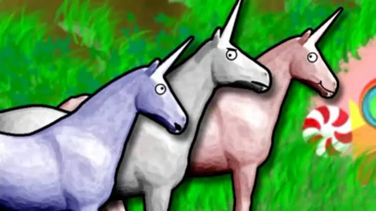

Main Characters:
The middle grey unicorn is the star of this show, named Charlie. He's suffered through multiple acts of criminal activity, including but not limited to harrasment, organ harvesting, theft, and even a case of an attempted murder. The pink and blue unicorns on each side of charlie are forever unnamed, and are the main criminal perpetrators. Howver, they are not fully to blame as they, rather than being unicorns, are 'possessed corspe puppets', as revealed in the movie.
First Episode